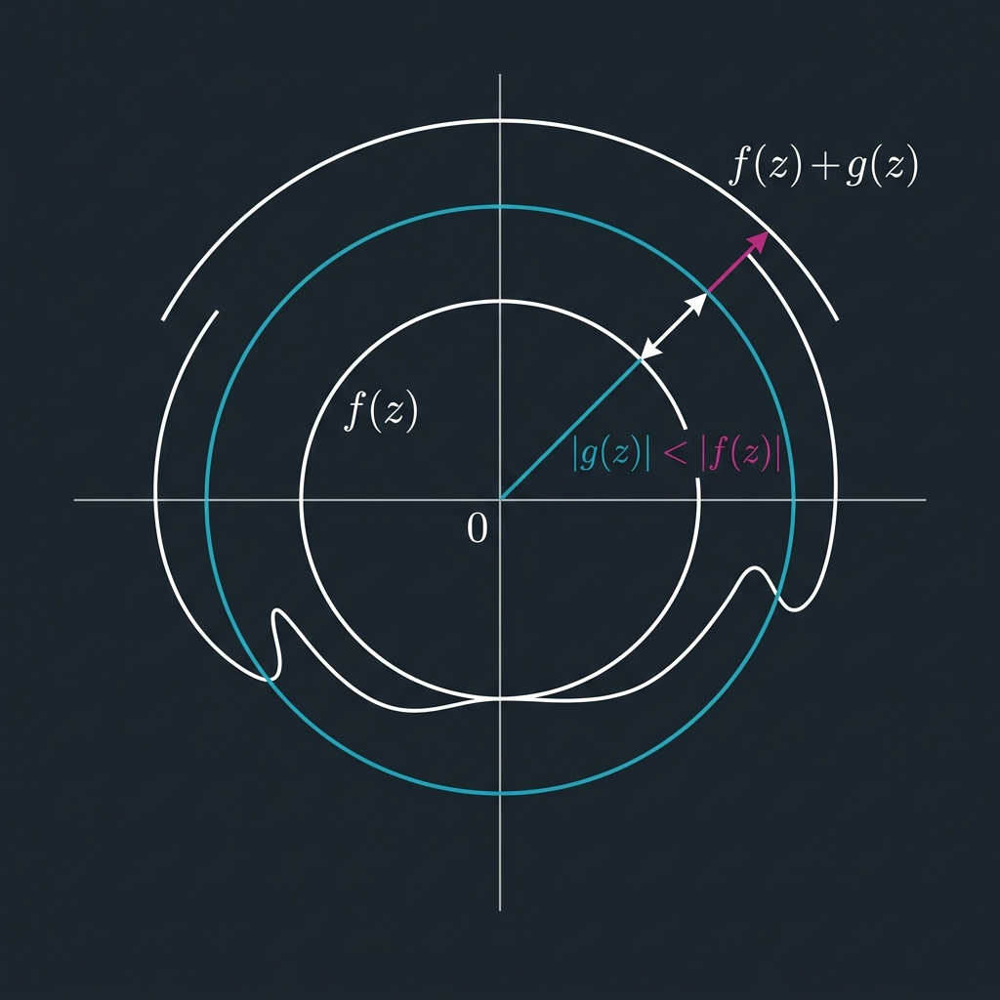

Rouché's Theorem

Mathematical Exposition
Rouché's Theorem is a classic and powerful result in complex analysis and algebraic topology. It provides a simple condition under which two holomorphic (or meromorphic) functions have the same number of roots (counted with multiplicity) inside a region.
Formally, let $D \subset \mathbb{C}$ be an open region bounded by a closed contour $C$. If $f$ and $g$ are holomorphic on $D \cup C$, and they satisfy the boundary inequality:
$$ |g(z)| < |f(z)| \quad \text{for all } z \in C $$then $f$ and $f + g$ have the same number of zeros inside $D$. In terms of winding numbers, this indicates that the boundary curves $f(C)$ and $(f+g)(C)$ wrap around the origin the same number of times.
The Dog on a Leash Metaphor
A classic physical intuition for Rouché's Theorem is the dog on a leash metaphor. Consider a person walking on a path $f(C)$ that winds around a post at the origin $0$. The person is holding a dog on a leash of length $|g(z)|$. The dog walks on a path $(f+g)(C)$.
If the leash length $|g(z)|$ is strictly less than the person's distance from the post $|f(z)|$ at all times, then the leash can never cross or sweep over the post. As a result, the dog must wind around the post exactly the same number of times as the person. By the argument principle, the winding number of the boundary curve corresponds to the number of zeros inside, so both functions have the same number of zeros inside the contour.
Proof Strategy in Lean 4
The formal proof `rouche_zero_count_eq` in Mathlib uses the divisor of a meromorphic function on a closed ball. The proof proceeds by establishing a homotopy from $f$ to $f+g$ through functions $f + t \cdot g$ for $t \in [0,1]$. By the boundary condition, no zero of $f + t \cdot g$ can lie on the boundary sphere, meaning the sum of divisors remains constant under deformation.
import Mathlib
open MeromorphicOn Metric Real
namespace Submission
lemma posPart_eq_self_add_negPart_locallyFinsupp {CB : Set ℂ} (D : Function.locallyFinsuppWithin CB ℤ) :
D⁺ = D + D⁻ := by
ext z
simp
nth_rw 2 [← posPart_sub_negPart (D z)]
rw [sub_add_cancel]
lemma divisor_pos_sum_eq_of_neg_eq_of_sum_eq {CB : Set ℂ} (hCB : IsCompact CB)
(D₁ D₂ : Function.locallyFinsuppWithin CB ℤ)
(h_neg : D₁⁻ = D₂⁻)
(h_sum : (∑ᶠ z, D₁ z) = (∑ᶠ z, D₂ z)) :
(∑ᶠ z, D₁⁺ z) = (∑ᶠ z, D₂⁺ z) := by
have hD1 : D₁⁺ = D₁ + D₁⁻ := posPart_eq_self_add_negPart_locallyFinsupp D₁
have hD2 : D₂⁺ = D₂ + D₂⁻ := posPart_eq_self_add_negPart_locallyFinsupp D₂
rw [hD1, hD2]
simp
simp_rw [← Function.locallyFinsuppWithin.negPart_apply]
have hD1_fin : (Function.support D₁).Finite := Function.locallyFinsuppWithin.finiteSupport D₁ hCB
have hD1neg_fin : (Function.support D₁⁻).Finite := Function.locallyFinsuppWithin.finiteSupport D₁⁻ hCB
have hD2_fin : (Function.support D₂).Finite := Function.locallyFinsuppWithin.finiteSupport D₂ hCB
have hD2neg_fin : (Function.support D₂⁻).Finite := Function.locallyFinsuppWithin.finiteSupport D₂⁻ hCB
rw [finsum_add_distrib (f := ⇑D₁) (g := ⇑D₁⁻) hD1_fin hD1neg_fin,
finsum_add_distrib (f := ⇑D₂) (g := ⇑D₂⁻) hD2_fin hD2neg_fin]
rw [h_sum, h_neg]
lemma divisor_neg_eq_of_analytic {f g : ℂ → ℂ} {R : ℝ}
(hf : MeromorphicOn f (Metric.closedBall 0 R))
(hg : AnalyticOnNhd ℂ g (Metric.closedBall 0 R)) :
(divisor (f + g) (Metric.closedBall 0 R))⁻ = (divisor f (Metric.closedBall 0 R))⁻ :=
negPart_divisor_add_of_analyticNhdOn_right hf hg
lemma meromorphicOrderAt_eq_zero_of_analyticAt_of_ne_zero {F : ℂ → ℂ} {x : ℂ}
(hF : AnalyticAt ℂ F x) (hF_ne : F x ≠ 0) :
meromorphicOrderAt F x = 0 := by
rw [hF.meromorphicOrderAt_eq]
have : analyticOrderAt F x = 0 := by
rw [analyticOrderAt_eq_zero]
right
exact hF_ne
rw [this]
rfl
lemma meromorphicOrderAt_ne_top_of_ne_zero {f : ℂ → ℂ} {z : ℂ}
(hf : MeromorphicNFAt f z) (h : f z ≠ 0) :
meromorphicOrderAt f z ≠ ⊤ := by
have h_zero : meromorphicOrderAt f z = 0 := hf.meromorphicOrderAt_eq_zero_iff.mpr h
rw [h_zero]
exact WithTop.zero_ne_top
lemma meromorphicOrderAt_ne_top_of_rouche {f g : ℂ → ℂ} {R : ℝ}
(hR : 0 < R)
(hf : MeromorphicNFOn f Set.univ)
(hbound : ∀ z : ℂ, ‖z‖ = R → ‖g z‖ < ‖f z‖) :
∀ z : ℂ, meromorphicOrderAt f z ≠ ⊤ := by
have h_norm : ‖(R : ℂ)‖ = R := by
simp [hR.le]
have h_ineq : ‖g (R : ℂ)‖ < ‖f (R : ℂ)‖ := hbound (R : ℂ) h_norm
have h_f_ne : f (R : ℂ) ≠ 0 := by
intro h_eq
have h_norm_f : ‖f (R : ℂ)‖ = 0 := by rw [h_eq, norm_zero]
rw [h_norm_f] at h_ineq
have h_g_nonneg := norm_nonneg (g (R : ℂ))
linarith
have h_ne_top_R : meromorphicOrderAt f (R : ℂ) ≠ ⊤ := by
apply meromorphicOrderAt_ne_top_of_ne_zero (hf (Set.mem_univ (R : ℂ))) h_f_ne
have h_univ_connected : IsConnected (Set.univ : Set ℂ) := isConnected_univ
have h_all := (hf.meromorphicOn.exists_meromorphicOrderAt_ne_top_iff_forall h_univ_connected).mp
have h_exists : ∃ u : (Set.univ : Set ℂ), meromorphicOrderAt f u.1 ≠ ⊤ :=
⟨⟨(R : ℂ), Set.mem_univ _⟩, h_ne_top_R⟩
have h_all_univ := h_all h_exists
intro z
exact h_all_univ ⟨z, Set.mem_univ _⟩
lemma meromorphicOrderAt_ne_top_of_ne_top_at_one_point {F : ℂ → ℂ} (hF : MeromorphicOn F Set.univ) {z₀ : ℂ} (hz₀ : meromorphicOrderAt F z₀ ≠ ⊤) :
∀ z, meromorphicOrderAt F z ≠ ⊤ := by
have h_univ_connected : IsConnected (Set.univ : Set ℂ) := isConnected_univ
have h_all := (hF.exists_meromorphicOrderAt_ne_top_iff_forall h_univ_connected).mp
have h_exists : ∃ u : (Set.univ : Set ℂ), meromorphicOrderAt F u.1 ≠ ⊤ :=
⟨⟨z₀, Set.mem_univ _⟩, hz₀⟩
have h_all_univ := h_all h_exists
intro z
exact h_all_univ ⟨z, Set.mem_univ _⟩
lemma meromorphicOrderAt_ne_top_of_rouche_both {f g : ℂ → ℂ} {R : ℝ}
(hR : 0 < R)
(hf : MeromorphicNFOn f Set.univ)
(hg : AnalyticOn ℂ g Set.univ)
(hbound : ∀ z : ℂ, ‖z‖ = R → ‖g z‖ < ‖f z‖) :
(∀ z, meromorphicOrderAt f z ≠ ⊤) ∧ (∀ z, meromorphicOrderAt (toMeromorphicNFOn (f + g) Set.univ) z ≠ ⊤) := by
have hf_ne_top := meromorphicOrderAt_ne_top_of_rouche hR hf hbound
refine ⟨hf_ne_top, ?_⟩
have hf_mero : MeromorphicOn f Set.univ := hf.meromorphicOn
have hg_mero : MeromorphicOn g Set.univ := (isOpen_univ.analyticOn_iff_analyticOnNhd.mp hg).meromorphicOn
have hfg_mero : MeromorphicOn (f + g) Set.univ := hf_mero.add hg_mero
let F_NF := toMeromorphicNFOn (f + g) Set.univ
have hF_NF_mero : MeromorphicOn F_NF Set.univ := (meromorphicNFOn_toMeromorphicNFOn (f + g) Set.univ).meromorphicOn
have hf_ne : f (R : ℂ) ≠ 0 := by
intro h_eq
have h_norm_f : ‖f (R : ℂ)‖ = 0 := by rw [h_eq, norm_zero]
have h_bound_R := hbound (R : ℂ) (by simp [hR.le])
rw [h_norm_f] at h_bound_R
have h_g_nonneg := norm_nonneg (g (R : ℂ))
linarith
have hf_order : meromorphicOrderAt f (R : ℂ) = 0 := (hf (Set.mem_univ (R : ℂ))).meromorphicOrderAt_eq_zero_iff.mpr hf_ne
have hf_analytic : AnalyticAt ℂ f (R : ℂ) :=
(hf (Set.mem_univ (R : ℂ))).meromorphicOrderAt_nonneg_iff_analyticAt.mp (le_of_eq hf_order.symm)
have hg_analytic : AnalyticAt ℂ g (R : ℂ) := by
have hg_within := hg (R : ℂ) (Set.mem_univ _)
rwa [analyticWithinAt_univ] at hg_within
have hfg_analytic : AnalyticAt ℂ (f + g) (R : ℂ) := hf_analytic.add hg_analytic
have hfg_ne : (f + g) (R : ℂ) ≠ 0 := by
intro h_eq
have h_norm_fg : ‖(f + g) (R : ℂ)‖ = 0 := by rw [h_eq, norm_zero]
have h_norm_ineq : ‖f (R : ℂ)‖ ≤ ‖(f + g) (R : ℂ)‖ + ‖g (R : ℂ)‖ := by
have : f (R : ℂ) = (f + g) (R : ℂ) - g (R : ℂ) := by simp
rw [this]
exact norm_sub_le _ _
rw [h_norm_fg, zero_add] at h_norm_ineq
have h_bound_R := hbound (R : ℂ) (by simp [hR.le])
linarith
have hfg_order : meromorphicOrderAt (f + g) (R : ℂ) = 0 :=
meromorphicOrderAt_eq_zero_of_analyticAt_of_ne_zero hfg_analytic hfg_ne
have hF_NF_ne_top_R : meromorphicOrderAt F_NF (R : ℂ) ≠ ⊤ := by
rw [meromorphicOrderAt_toMeromorphicNFOn hfg_mero (Set.mem_univ (R : ℂ))]
exact hfg_order ▸ WithTop.zero_ne_top
exact meromorphicOrderAt_ne_top_of_ne_top_at_one_point hF_NF_mero hF_NF_ne_top_R
lemma norm_lt_R_of_mem_support_divisor_f {f g : ℂ → ℂ} {R : ℝ}
(hR : 0 < R)
(hf : MeromorphicNFOn f Set.univ)
(hbound : ∀ z : ℂ, ‖z‖ = R → ‖g z‖ < ‖f z‖)
{z : ℂ} (hz : z ∈ Function.support (divisor f (Metric.closedBall 0 R))) :
‖z‖ < R := by
have h_mem_ball : z ∈ Metric.closedBall (0 : ℂ) R := by
by_contra h_not
apply Function.mem_support.mp hz
exact Function.locallyFinsuppWithin.apply_eq_zero_of_notMem _ h_not
have h_ne_top := meromorphicOrderAt_ne_top_of_rouche hR hf hbound z
by_contra h_not_lt
have h_eq : ‖z‖ = R := by
have h_norm_le : ‖z‖ ≤ R := by
have := h_mem_ball
simp only [Metric.mem_closedBall, _root_.dist_zero_right] at this
exact this
linarith
have hf_ne : f z ≠ 0 := by
intro h_eq_zero
have h_norm_f : ‖f z‖ = 0 := by rw [h_eq_zero, norm_zero]
have h_bound_z := hbound z h_eq
rw [h_norm_f] at h_bound_z
have h_g_nonneg := norm_nonneg (g z)
linarith
have h_order : meromorphicOrderAt f z = 0 := (hf (Set.mem_univ z)).meromorphicOrderAt_eq_zero_iff.mpr hf_ne
have h_div_zero : divisor f (Metric.closedBall 0 R) z = 0 := by
rw [divisor_apply (hf.meromorphicOn.mono_set (Set.subset_univ _)) h_mem_ball]
rw [h_order]
rfl
apply Function.mem_support.mp hz h_div_zero
lemma norm_lt_R_of_mem_support_divisor_fg {f g : ℂ → ℂ} {R : ℝ}
(hf : MeromorphicNFOn f Set.univ)
(hg : AnalyticOn ℂ g Set.univ)
(hbound : ∀ z : ℂ, ‖z‖ = R → ‖g z‖ < ‖f z‖)
{z : ℂ} (hz : z ∈ Function.support (divisor (toMeromorphicNFOn (f + g) Set.univ) (Metric.closedBall 0 R))) :
‖z‖ < R := by
let F_NF := toMeromorphicNFOn (f + g) Set.univ
have hf_mero : MeromorphicOn f Set.univ := hf.meromorphicOn
have hg_mero : MeromorphicOn g Set.univ := (isOpen_univ.analyticOn_iff_analyticOnNhd.mp hg).meromorphicOn
have hfg_mero : MeromorphicOn (f + g) Set.univ := hf_mero.add hg_mero
have hF_NF_mero : MeromorphicOn F_NF Set.univ := (meromorphicNFOn_toMeromorphicNFOn (f + g) Set.univ).meromorphicOn
have h_mem_ball : z ∈ Metric.closedBall (0 : ℂ) R := by
by_contra h_not
apply Function.mem_support.mp hz
exact Function.locallyFinsuppWithin.apply_eq_zero_of_notMem _ h_not
by_contra h_not_lt
have h_eq : ‖z‖ = R := by
have h_norm_le : ‖z‖ ≤ R := by
have := h_mem_ball
simp only [Metric.mem_closedBall, _root_.dist_zero_right] at this
exact this
linarith
have hf_ne : f z ≠ 0 := by
intro h_eq_zero
have h_norm_f : ‖f z‖ = 0 := by rw [h_eq_zero, norm_zero]
have h_bound_z := hbound z h_eq
rw [h_norm_f] at h_bound_z
have h_g_nonneg := norm_nonneg (g z)
linarith
have h_order_f : meromorphicOrderAt f z = 0 := (hf (Set.mem_univ z)).meromorphicOrderAt_eq_zero_iff.mpr hf_ne
have hf_analytic : AnalyticAt ℂ f z :=
(hf (Set.mem_univ z)).meromorphicOrderAt_nonneg_iff_analyticAt.mp (le_of_eq h_order_f.symm)
have hg_analytic : AnalyticAt ℂ g z := by
have hg_within := hg z (Set.mem_univ _)
rwa [analyticWithinAt_univ] at hg_within
have hfg_analytic : AnalyticAt ℂ (f + g) z := hf_analytic.add hg_analytic
have hfg_ne : (f + g) z ≠ 0 := by
intro h_eq_zero
have h_norm_fg : ‖(f + g) z‖ = 0 := by rw [h_eq_zero, norm_zero]
have h_norm_ineq : ‖f z‖ ≤ ‖(f + g) z‖ + ‖g z‖ := by
have : f z = (f + g) z - g z := by simp
rw [this]
exact norm_sub_le _ _
rw [h_norm_fg, zero_add] at h_norm_ineq
have h_bound_z := hbound z h_eq
linarith
have hfg_order : meromorphicOrderAt (f + g) z = 0 :=
meromorphicOrderAt_eq_zero_of_analyticAt_of_ne_zero hfg_analytic hfg_ne
have h_order : meromorphicOrderAt F_NF z = 0 := by
rw [meromorphicOrderAt_toMeromorphicNFOn hfg_mero (Set.mem_univ z)]
exact hfg_order
have h_div_zero : divisor F_NF (Metric.closedBall 0 R) z = 0 := by
rw [divisor_apply (hF_NF_mero.mono_set (Set.subset_univ _)) h_mem_ball]
rw [h_order]
rfl
apply Function.mem_support.mp hz h_div_zero
lemma exists_radius_lt_of_finite_norms {S : Finset ℂ} {R : ℝ} (hR : 0 < R) (hS : ∀ z ∈ S, ‖z‖ < R) :
∃ r < R, 0 < r ∧ ∀ z ∈ S, ‖z‖ < r := by
by_cases hS_empty : S = ∅
· use R / 2
refine ⟨by linarith, by linarith, ?_⟩
intro z hz
rw [hS_empty] at hz
cases hz
· have hS_nonempty : S.Nonempty := Finset.nonempty_iff_ne_empty.mpr hS_empty
let norms := S.image norm
have h_norms_nonempty : norms.Nonempty := Finset.Nonempty.image hS_nonempty norm
let m := norms.max' h_norms_nonempty
have hm_mem : m ∈ norms := Finset.max'_mem norms h_norms_nonempty
obtain ⟨z₀, hz₀_S, hz₀_norm⟩ := Finset.mem_image.mp hm_mem
have hm_lt : m < R := by
rw [← hz₀_norm]
exact hS z₀ hz₀_S
have hm_nonneg : 0 ≤ m := by
rw [← hz₀_norm]
exact norm_nonneg z₀
use (m + R) / 2
refine ⟨by linarith, by linarith, ?_⟩
intro z hz
have hz_le_m : ‖z‖ ≤ m := Finset.le_max' norms ‖z‖ (Finset.mem_image_of_mem norm hz)
linarith
lemma exists_radius_no_zeros_poles {f g : ℂ → ℂ} {R : ℝ}
(hR : 0 < R)
(hf : MeromorphicNFOn f Set.univ)
(hg : AnalyticOn ℂ g Set.univ)
(hbound : ∀ z : ℂ, ‖z‖ = R → ‖g z‖ < ‖f z‖) :
∃ r < R, 0 < r ∧
(∀ z, r < ‖z‖ ∧ ‖z‖ ≤ R → meromorphicOrderAt f z = 0) ∧
(∀ z, r < ‖z‖ ∧ ‖z‖ ≤ R → meromorphicOrderAt (toMeromorphicNFOn (f + g) Set.univ) z = 0) := by
let F_NF := toMeromorphicNFOn (f + g) Set.univ
have hf_mero : MeromorphicOn f Set.univ := hf.meromorphicOn
have hg_mero : MeromorphicOn g Set.univ := (isOpen_univ.analyticOn_iff_analyticOnNhd.mp hg).meromorphicOn
have hfg_mero : MeromorphicOn (f + g) Set.univ := hf_mero.add hg_mero
have hF_NF_mero : MeromorphicOn F_NF Set.univ := (meromorphicNFOn_toMeromorphicNFOn (f + g) Set.univ).meromorphicOn
have h_div_f_fin : (Function.support (divisor f (Metric.closedBall 0 R))).Finite :=
Function.locallyFinsuppWithin.finiteSupport (divisor f (Metric.closedBall 0 R)) (isCompact_closedBall 0 R)
have h_div_F_NF_fin : (Function.support (divisor F_NF (Metric.closedBall 0 R))).Finite :=
Function.locallyFinsuppWithin.finiteSupport (divisor F_NF (Metric.closedBall 0 R)) (isCompact_closedBall 0 R)
let S := (Function.support (divisor f (Metric.closedBall 0 R))) ∪ (Function.support (divisor F_NF (Metric.closedBall 0 R)))
have hS_fin : S.Finite := h_div_f_fin.union h_div_F_NF_fin
have hS_lt_R : ∀ z ∈ S, ‖z‖ < R := by
intro z hz
rcases hz with h1 | h2
· exact norm_lt_R_of_mem_support_divisor_f hR hf hbound h1
· exact norm_lt_R_of_mem_support_divisor_fg hf hg hbound h2
obtain ⟨r, hr_lt_R, hr_pos, hr_bound⟩ := exists_radius_lt_of_finite_norms hR (S := hS_fin.toFinset) (by
intro z hz
rw [Set.Finite.mem_toFinset] at hz
exact hS_lt_R z hz)
refine ⟨r, hr_lt_R, hr_pos, ?_, ?_⟩
· intro z ⟨hz_norm1, hz_norm2⟩
have hz_ball : z ∈ Metric.closedBall (0 : ℂ) R := by
simp only [Metric.mem_closedBall, _root_.dist_zero_right, hz_norm2]
have h_ne_top := meromorphicOrderAt_ne_top_of_rouche hR hf hbound z
by_contra h_nz
have h_mem_S : z ∈ S := by
left
simp only [Function.mem_support, ne_eq]
intro h_div_zero
apply h_nz
have h_div_apply := divisor_apply (hf_mero.mono_set (Set.subset_univ _)) hz_ball
rw [h_div_zero] at h_div_apply
exact (WithTop.untop₀_eq_zero.mp h_div_apply.symm).resolve_right h_ne_top
have h_mem_fin : z ∈ hS_fin.toFinset := by rwa [Set.Finite.mem_toFinset]
have hz_lt_r := hr_bound z h_mem_fin
linarith
· intro z ⟨hz_norm1, hz_norm2⟩
have hz_ball : z ∈ Metric.closedBall (0 : ℂ) R := by
simp only [Metric.mem_closedBall, _root_.dist_zero_right, hz_norm2]
have h_both := meromorphicOrderAt_ne_top_of_rouche_both hR hf hg hbound
have h_ne_top := h_both.2 z
by_contra h_nz
have h_mem_S : z ∈ S := by
right
simp only [Function.mem_support, ne_eq]
intro h_div_zero
apply h_nz
have h_div_apply := divisor_apply (hF_NF_mero.mono_set (Set.subset_univ _)) hz_ball
rw [h_div_zero] at h_div_apply
exact (WithTop.untop₀_eq_zero.mp h_div_apply.symm).resolve_right h_ne_top
have h_mem_fin : z ∈ hS_fin.toFinset := by rwa [Set.Finite.mem_toFinset]
have hz_lt_r := hr_bound z h_mem_fin
linarith
lemma circleAverage_re_eq {c : ℂ} {R : ℝ} {F : ℂ → ℂ} (hF : ContinuousOn F (circleMap c R '' Set.Icc 0 (2 * Real.pi))) :
Real.circleAverage (fun z => (F z).re) c R = (Real.circleAverage F c R).re := by
rw [Real.circleAverage_def, Real.circleAverage_def]
have h_le : 0 ≤ 2 * Real.pi := by
have : 0 < Real.pi := Real.pi_pos
linarith
have h_uIcc : Set.uIcc 0 (2 * Real.pi) = Set.Icc 0 (2 * Real.pi) := Set.uIcc_of_le h_le
have h_int : IntervalIntegrable (fun x => F (circleMap c R x)) MeasureTheory.volume 0 (2 * Real.pi) := by
apply ContinuousOn.intervalIntegrable
rw [h_uIcc]
apply ContinuousOn.comp hF (Continuous.continuousOn (continuous_circleMap c R)) (Set.mapsTo_image (circleMap c R) (Set.Icc 0 (2 * Real.pi)))
change (2 * Real.pi)⁻¹ • ∫ (θ : ℝ) in 0..2 * Real.pi, Complex.reCLM (F (circleMap c R θ)) = Complex.reCLM ((2 * Real.pi)⁻¹ • ∫ (θ : ℝ) in 0..2 * Real.pi, F (circleMap c R θ))
rw [_root_.map_smul]
rw [ContinuousLinearMap.intervalIntegral_comp_comm Complex.reCLM h_int]
lemma mem_slitPlane_of_norm_sub_one_lt {z : ℂ} (h : ‖z - 1‖ < 1) : z ∈ Complex.slitPlane := by
have h1 : ‖1 - z‖ < 1 := by
rw [← norm_neg, neg_sub]
exact h
have h2 : (1 - z).re ≤ ‖1 - z‖ := Complex.re_le_norm (1 - z)
have h3 : (1 - z).re < 1 := by linarith
rw [Complex.sub_re] at h3
simp at h3
have : 0 < z.re := by linarith
exact Or.inl this
lemma analyticAt_of_divisor_eq_zero {F : ℂ → ℂ} {U : Set ℂ} {z : ℂ}
(hF_nf : MeromorphicNFOn F Set.univ)
(hF_ne_top : meromorphicOrderAt F z ≠ ⊤)
(h_div : divisor F U z = 0)
(hz : z ∈ U) :
AnalyticAt ℂ F z := by
have h_mero : MeromorphicOn F U := hF_nf.meromorphicOn.mono_set (Set.subset_univ _)
have h_div_apply : divisor F U z = (meromorphicOrderAt F z).untop₀ := divisor_apply h_mero hz
rw [h_div] at h_div_apply
have h_order : meromorphicOrderAt F z = 0 := by
have := (WithTop.untop₀_eq_zero.mp h_div_apply.symm).resolve_right hF_ne_top
exact this
have h_nonneg : 0 ≤ meromorphicOrderAt F z := by
rw [h_order]
exact (hF_nf (Set.mem_univ z)).meromorphicOrderAt_nonneg_iff_analyticAt.mp h_nonneg
lemma circleAverage_eq_of_analytic_on_annulus {c : ℂ} {r R : ℝ} (h0 : 0 < r) (hle : r ≤ R)
{H : ℂ → ℂ} (hH : AnalyticOn ℂ H (Metric.closedBall c R \ Metric.ball c r)) :
Real.circleAverage H c R = Real.circleAverage H c r := by
have hR_ne : R ≠ 0 := by linarith
have hr_ne : r ≠ 0 := by linarith
rw [Real.circleAverage_eq_circleIntegral hR_ne, Real.circleAverage_eq_circleIntegral hr_ne]
simp_rw [smul_eq_mul]
congr 1
let A := Metric.closedBall c R \ Metric.ball c r
have h_ne : ∀ z ∈ A, z - c ≠ 0 := by
rintro z ⟨_, hz_not_ball⟩
simp only [Metric.mem_ball, not_lt] at hz_not_ball
have h_dist : dist z c ≠ 0 := by linarith
intro h_sub
apply h_dist
rw [sub_eq_zero.mp h_sub, _root_.dist_self]
have hc : ContinuousOn (fun z => (z - c)⁻¹ * H z) A := by
apply ContinuousOn.mul
· apply ContinuousOn.inv₀
· exact continuousOn_id.sub continuousOn_const
· exact h_ne
· exact hH.continuousOn
have hd : ∀ z ∈ (Metric.ball c R \ Metric.closedBall c r) \ (∅ : Set ℂ),
DifferentiableAt ℂ (fun z => (z - c)⁻¹ * H z) z := by
rintro z ⟨⟨hz_ball, hz_not_cball⟩, _⟩
have hz_A : z ∈ A := by
refine ⟨Metric.ball_subset_closedBall hz_ball, ?_⟩
simp only [Metric.mem_closedBall, not_le] at hz_not_cball
simp only [Metric.mem_ball]
linarith
have h_z_ne : z - c ≠ 0 := h_ne z hz_A
have h_nhd : A ∈ nhds z := by
apply _root_.mem_nhds_iff.mpr
use Metric.ball c R \ Metric.closedBall c r
refine ⟨?_, ?_, ?_⟩
· rintro w ⟨hw1, hw2⟩
refine ⟨Metric.ball_subset_closedBall hw1, ?_⟩
simp only [Metric.mem_closedBall, not_le] at hw2
simp only [Metric.mem_ball, not_lt]
linarith
· exact (Metric.isOpen_ball.sdiff Metric.isClosed_closedBall)
· exact ⟨hz_ball, hz_not_cball⟩
apply DifferentiableAt.mul
· apply DifferentiableAt.inv
· exact differentiableAt_id.sub_const c
· exact h_z_ne
· exact hH.differentiableOn.differentiableAt h_nhd
have h_int_eq := Complex.circleIntegral_eq_of_differentiable_on_annulus_off_countable h0 hle Set.countable_empty hc hd
exact h_int_eq
lemma divisor_coe_eq_of_no_zeros_poles {f : ℂ → ℂ} {r R : ℝ} (hrR : r ≤ R)
(hf : MeromorphicOn f (Metric.closedBall 0 R))
(h_no : ∀ z, r < ‖z‖ ∧ ‖z‖ ≤ R → meromorphicOrderAt f z = 0) :
⇑(divisor f (Metric.closedBall 0 R)) = ⇑(divisor f (Metric.closedBall 0 r)) := by
ext z
by_cases hz : z ∈ Metric.closedBall 0 r
· have hzR : z ∈ Metric.closedBall 0 R := Metric.closedBall_subset_closedBall hrR hz
rw [divisor_apply hf hzR, divisor_apply (hf.mono_set (Metric.closedBall_subset_closedBall hrR)) hz]
· rw [Function.locallyFinsuppWithin.apply_eq_zero_of_notMem _ hz]
by_cases hzR : z ∈ Metric.closedBall 0 R
· rw [divisor_apply hf hzR]
have hz_norm : r < ‖z‖ := by
simp only [Metric.mem_closedBall, _root_.dist_zero_right, not_le] at hz
exact hz
have hzR_norm : ‖z‖ ≤ R := by
simp only [Metric.mem_closedBall, _root_.dist_zero_right] at hzR
exact hzR
have h_order : meromorphicOrderAt f z = 0 := h_no z ⟨hz_norm, hzR_norm⟩
rw [h_order]
rfl
· exact Function.locallyFinsuppWithin.apply_eq_zero_of_notMem _ hzR
lemma divisor_posPart_coe_eq_of_no_zeros_poles {f : ℂ → ℂ} {r R : ℝ} (hrR : r ≤ R)
(hf : MeromorphicOn f (Metric.closedBall 0 R))
(h_no : ∀ z, r < ‖z‖ ∧ ‖z‖ ≤ R → meromorphicOrderAt f z = 0) :
⇑(divisor f (Metric.closedBall 0 R))⁺ = ⇑(divisor f (Metric.closedBall 0 r))⁺ := by
have h := divisor_coe_eq_of_no_zeros_poles hrR hf h_no
ext z
simp_rw [Function.locallyFinsuppWithin.posPart_apply]
rw [h]
lemma divisor_posPart_finsum_eq_of_no_zeros_poles {f : ℂ → ℂ} {r R : ℝ} (hrR : r ≤ R)
(hf : MeromorphicOn f (Metric.closedBall 0 R))
(h_no : ∀ z, r < ‖z‖ ∧ ‖z‖ ≤ R → meromorphicOrderAt f z = 0) :
(∑ᶠ z, (divisor f (Metric.closedBall 0 R))⁺ z) =
(∑ᶠ z, (divisor f (Metric.closedBall 0 r))⁺ z) := by
have h := divisor_posPart_coe_eq_of_no_zeros_poles hrR hf h_no
simp_rw [h]
lemma circleAverage_log_norm_sub_circleAverage_log_norm {F : ℂ → ℂ} {r R : ℝ}
(hr : 0 < r)
(hrR : r < R)
(hF : MeromorphicOn F (Metric.closedBall 0 R))
(h_no : ∀ z, r < ‖z‖ ∧ ‖z‖ ≤ R → meromorphicOrderAt F z = 0) :
Real.circleAverage (fun x => Real.log ‖F x‖) 0 R - Real.circleAverage (fun x => Real.log ‖F x‖) 0 r =
(∑ᶠ u, (divisor F (Metric.closedBall 0 R) u : ℝ)) * (Real.log R - Real.log r) := by
have hR_pos : 0 < R := by linarith
have hR_nz : R ≠ 0 := by linarith
have hr_nz : r ≠ 0 := by linarith
have hR_abs : |R| = R := abs_of_pos hR_pos
have hr_abs : |r| = r := abs_of_pos hr
have hF_R_abs : MeromorphicOn F (closedBall 0 |R|) := by rwa [hR_abs]
have jensen_R := hF_R_abs.circleAverage_log_norm hR_nz
rw [hR_abs] at jensen_R
have hF_r : MeromorphicOn F (closedBall 0 r) := hF.mono_set (closedBall_subset_closedBall hrR.le)
have hF_r_abs : MeromorphicOn F (closedBall 0 |r|) := by rwa [hr_abs]
have jensen_r := hF_r_abs.circleAverage_log_norm hr_nz
rw [hr_abs] at jensen_r
have h_div_eq : ⇑(divisor F (closedBall 0 R)) = ⇑(divisor F (closedBall 0 r)) := divisor_coe_eq_of_no_zeros_poles hrR.le hF h_no
have hD_fin : (⇑(divisor F (closedBall 0 R))).HasFiniteSupport :=
Function.locallyFinsuppWithin.finiteSupport (divisor F (closedBall 0 R)) (isCompact_closedBall 0 R)
have h_add_R := countingFunction_finsum_eq_finsum_add (D := ⇑(divisor F (closedBall 0 R))) (c := 0) hR_nz hD_fin
have h_add_r := countingFunction_finsum_eq_finsum_add (D := ⇑(divisor F (closedBall 0 r))) (c := 0) hr_nz (by rwa [← h_div_eq])
change circleAverage (fun x => log ‖F x‖) 0 R =
∑ᶠ (u : ℂ), ↑(⇑(divisor F (closedBall 0 R)) u) * log (R * ‖0 - u‖⁻¹) + ↑(⇑(divisor F (closedBall 0 R)) 0) * log R +
log ‖meromorphicTrailingCoeffAt F 0‖ at jensen_R
rw [← h_add_R] at jensen_R
change circleAverage (fun x => log ‖F x‖) 0 r =
∑ᶠ (u : ℂ), ↑(⇑(divisor F (closedBall 0 r)) u) * log (r * ‖0 - u‖⁻¹) + ↑(⇑(divisor F (closedBall 0 r)) 0) * log r +
log ‖meromorphicTrailingCoeffAt F 0‖ at jensen_r
rw [← h_add_r] at jensen_r
rw [jensen_R, jensen_r]
rw [h_div_eq]
-- Now simplify:
-- (∑ᶠ u, D u * (log R - log ‖0 - u‖) + C) - (∑ᶠ u, D u * (log r - log ‖0 - u‖) + C)
-- = ∑ᶠ u, D u * (log R - log ‖0 - u‖) - ∑ᶠ u, D u * (log r - log ‖0 - u‖)
have h_alg (A B C : ℝ) : (A + C) - (B + C) = A - B := by ring
rw [h_alg]
have hf : (fun u => (⇑(divisor F (closedBall 0 r)) u : ℝ) * (log R - log ‖0 - u‖)).HasFiniteSupport := by
apply (hD_fin.subset (by rw [h_div_eq])).subset
intro u hu
simp only [Function.mem_support, ne_eq] at hu
intro h_zero
apply hu
rw [h_zero, Int.cast_zero, zero_mul]
have hg : (fun u => (⇑(divisor F (closedBall 0 r)) u : ℝ) * (log r - log ‖0 - u‖)).HasFiniteSupport := by
apply (hD_fin.subset (by rw [h_div_eq])).subset
intro u hu
simp only [Function.mem_support, ne_eq] at hu
intro h_zero
apply hu
rw [h_zero, Int.cast_zero, zero_mul]
rw [← finsum_sub_distrib hf hg]
-- Inside the sum, we have D u * (log R - log ‖0 - u‖) - D u * (log r - log ‖0 - u‖)
-- = D u * (log R - log r)
have h_inner : ∀ u : ℂ, (⇑(divisor F (closedBall 0 r)) u : ℝ) * (log R - log ‖0 - u‖) - (⇑(divisor F (closedBall 0 r)) u : ℝ) * (log r - log ‖0 - u‖) =
(⇑(divisor F (closedBall 0 r)) u : ℝ) * (log R - log r) := by
intro u
ring
simp_rw [h_inner]
rw [h_div_eq] at hD_fin
have hD_fin_real : (fun u => (⇑(divisor F (closedBall 0 r)) u : ℝ)).HasFiniteSupport := by
change (Function.support (fun u => (⇑(divisor F (closedBall 0 r)) u : ℝ))).Finite
have h_eq_supp : Function.support (fun u => (⇑(divisor F (closedBall 0 r)) u : ℝ)) = Function.support ⇑(divisor F (closedBall 0 r)) := by
ext u
simp only [Function.mem_support, ne_eq, Int.cast_eq_zero]
rw [h_eq_supp]
exact hD_fin
have h_finsum_mul := finsum_mul' (fun u => (⇑(divisor F (closedBall 0 r)) u : ℝ)) (log R - log r) hD_fin_real
rw [← h_finsum_mul]
lemma annulus_compact {R r₀ : ℝ} : IsCompact (closedBall (0 : ℂ) R \ ball (0 : ℂ) r₀) := by
rw [isCompact_iff_isClosed_bounded]
refine ⟨isClosed_closedBall.sdiff isOpen_ball, ?_⟩
exact isBounded_closedBall.subset Set.diff_subset
lemma exists_radius_bound {f g : ℂ → ℂ} {R r₀ : ℝ} (_hR : 0 < R) (_hr₀ : 0 < r₀) (hr₀R : r₀ < R)
(hf : ContinuousOn f (closedBall 0 R \ ball 0 r₀))
(hg : ContinuousOn g (closedBall 0 R \ ball 0 r₀))
(hbound : ∀ z : ℂ, ‖z‖ = R → ‖g z‖ < ‖f z‖) :
∃ r < R, r₀ < r ∧ ∀ z : ℂ, r ≤ ‖z‖ ∧ ‖z‖ ≤ R → ‖g z‖ < ‖f z‖ := by
let A := closedBall (0 : ℂ) R \ ball (0 : ℂ) r₀
let C := {z | z ∈ A ∧ ‖f z‖ ≤ ‖g z‖}
have h_ann_compact : IsCompact A := annulus_compact
have hf_norm : ContinuousOn (fun z => ‖f z‖) A := continuous_norm.comp_continuousOn hf
have hg_norm : ContinuousOn (fun z => ‖g z‖) A := continuous_norm.comp_continuousOn hg
have hC_closed : IsClosed C := IsClosed.isClosed_le (isClosed_closedBall.sdiff isOpen_ball) hf_norm hg_norm
have hC_compact : IsCompact C := IsCompact.of_isClosed_subset h_ann_compact hC_closed (fun z hz => hz.1)
by_cases hC : C.Nonempty
· obtain ⟨z_max, hz_max_C, hz_max_is_max⟩ := IsCompact.exists_isMaxOn hC_compact hC continuous_norm.continuousOn
have hz_max_A : z_max ∈ A := hz_max_C.1
have hz_max_norm_le : ‖z_max‖ ≤ R := by
have := hz_max_A.1
rwa [mem_closedBall, _root_.dist_zero_right] at this
have hz_max_norm_lt : ‖z_max‖ < R := by
by_contra! h_eq
have hz_max_eq : ‖z_max‖ = R := by linarith
have h_bound_z := hbound z_max hz_max_eq
have h_C_z := hz_max_C.2
linarith
let r := (‖z_max‖ + R) / 2
have hr_lt_R : r < R := by
dsimp [r]
linarith
have hr₀_lt_r : r₀ < r := by
have : r₀ ≤ ‖z_max‖ := by
have := hz_max_A.2
rwa [mem_ball, _root_.dist_zero_right, not_lt] at this
dsimp [r]
linarith
refine ⟨r, hr_lt_R, hr₀_lt_r, ?_⟩
intro z ⟨hz_ge, hz_le⟩
by_contra! h_le
have hz_C : z ∈ C := by
refine ⟨⟨?_, ?_⟩, h_le⟩
· rwa [mem_closedBall, _root_.dist_zero_right]
· rw [mem_ball, _root_.dist_zero_right, not_lt]
have : r₀ < r := hr₀_lt_r
linarith
have hz_le_max : ‖z‖ ≤ ‖z_max‖ := hz_max_is_max hz_C
dsimp [r] at hz_ge
linarith
· let r := (r₀ + R) / 2
have hr_lt_R : r < R := by
dsimp [r]
linarith
have hr₀_lt_r : r₀ < r := by
dsimp [r]
linarith
refine ⟨r, hr_lt_R, hr₀_lt_r, ?_⟩
intro z ⟨hz_ge, hz_le⟩
have hz_A : z ∈ A := by
refine ⟨?_, ?_⟩
· rwa [mem_closedBall, _root_.dist_zero_right]
· rw [mem_ball, _root_.dist_zero_right, not_lt]
linarith
have hC_empty : C = ∅ := Set.not_nonempty_iff_eq_empty.mp hC
have hz_not_C : z ∉ C := by
rw [hC_empty]
intro hz
rwa [Set.mem_empty_iff_false] at hz
have h_not_le : ¬ (‖f z‖ ≤ ‖g z‖) := by
intro h_le
apply hz_not_C
exact ⟨hz_A, h_le⟩
exact not_le.mp h_not_le
lemma toMeromorphicNFOn_apply_of_analyticAt {f : ℂ → ℂ} {x : ℂ} {U : Set ℂ}
(hf : MeromorphicOn f U) (hx : x ∈ U) (ha : AnalyticAt ℂ f x) :
toMeromorphicNFOn f U x = f x := by
rw [toMeromorphicNFOn_eq_toMeromorphicNFAt hf hx]
have h_nf : MeromorphicNFAt f x := ha.meromorphicNFAt
have h_eq : toMeromorphicNFAt f x = f := toMeromorphicNFAt_eq_self.mpr h_nf
rw [h_eq]
lemma finsum_cast_int_to_real {α : Type*} (f : α → ℤ) {s : Finset α} (h : Function.support f ⊆ ↑s) :
(((∑ᶠ x, f x : ℤ) : ℝ)) = ∑ᶠ x, (f x : ℝ) := by
rw [finsum_eq_sum_of_support_subset f h]
have h_supp_cast : Function.support (fun x => (f x : ℝ)) ⊆ ↑s := by
intro x hx
simp only [Function.mem_support, ne_eq, Int.cast_eq_zero] at hx
exact h hx
rw [finsum_eq_sum_of_support_subset (fun x => (f x : ℝ)) h_supp_cast]
exact map_sum (Int.castRingHom ℝ) f s
lemma continuousOn_of_analyticOn {f : ℂ → ℂ} {s : Set ℂ} (h : AnalyticOn ℂ f s) : ContinuousOn f s := by
intro z hz
exact ((h z hz).differentiableWithinAt.continuousWithinAt).mono (Set.subset_insert z s)
theorem rouche_zero_count_eq {f g : ℂ → ℂ} {R : ℝ}
(hR : 0 < R)
(hf : MeromorphicNFOn f Set.univ)
(hg : AnalyticOn ℂ g Set.univ)
(hbound : ∀ z : ℂ, ‖z‖ = R → ‖g z‖ < ‖f z‖) :
(∑ᶠ z, ((divisor (f + g) (Metric.closedBall 0 R))⁺) z) =
(∑ᶠ z, ((divisor f (Metric.closedBall 0 R))⁺) z) := by
have hf_mero : MeromorphicOn f Set.univ := hf.meromorphicOn
have hg_mero : MeromorphicOn g Set.univ := (isOpen_univ.analyticOn_iff_analyticOnNhd.mp hg).meromorphicOn
have hfg_mero : MeromorphicOn (f + g) Set.univ := hf_mero.add hg_mero
let F_NF := toMeromorphicNFOn (f + g) Set.univ
have hF_NF_mero : MeromorphicOn F_NF Set.univ := (meromorphicNFOn_toMeromorphicNFOn (f + g) Set.univ).meromorphicOn
have h_div_eq : divisor (f + g) (Metric.closedBall 0 R) = divisor F_NF (Metric.closedBall 0 R) := by
ext z
simp_rw [MeromorphicOn.divisor_def]
by_cases hz : z ∈ Metric.closedBall 0 R
· have h_sub : Metric.closedBall (0 : ℂ) R ⊆ Set.univ := Set.subset_univ _
have h_f_mero_ball : MeromorphicOn (f + g) (Metric.closedBall (0 : ℂ) R) := hfg_mero.mono_set h_sub
have h_NF_mero_ball : MeromorphicOn F_NF (Metric.closedBall (0 : ℂ) R) := hF_NF_mero.mono_set h_sub
have h1 : MeromorphicOn (f + g) (Metric.closedBall (0 : ℂ) R) ∧ z ∈ Metric.closedBall (0 : ℂ) R := ⟨h_f_mero_ball, hz⟩
have h2 : MeromorphicOn F_NF (Metric.closedBall (0 : ℂ) R) ∧ z ∈ Metric.closedBall (0 : ℂ) R := ⟨h_NF_mero_ball, hz⟩
rw [if_pos h1, if_pos h2]
have h_eq_nhdsNE : F_NF =ᶠ[nhdsWithin z {z}ᶜ] f + g := toMeromorphicNFOn_eq_self_on_nhdsNE hfg_mero (Set.mem_univ z)
rw [meromorphicOrderAt_congr h_eq_nhdsNE]
· have h1 : ¬(MeromorphicOn (f + g) (Metric.closedBall (0 : ℂ) R) ∧ z ∈ Metric.closedBall (0 : ℂ) R) := fun h => hz h.2
have h2 : ¬(MeromorphicOn F_NF (Metric.closedBall (0 : ℂ) R) ∧ z ∈ Metric.closedBall (0 : ℂ) R) := fun h => hz h.2
rw [if_neg h1, if_neg h2]
obtain ⟨r₀, hr₀_lt_R, hr₀_pos, h_no_f, h_no_fg⟩ := exists_radius_no_zeros_poles hR hf hg hbound
let r_mid := (r₀ + R) / 2
have h_mid_lt : r₀ < r_mid := by dsimp [r_mid]; linarith
have h_mid_R : r_mid < R := by dsimp [r_mid]; linarith
have h_mid_pos : 0 < r_mid := by dsimp [r_mid]; linarith
have hf_ana_mid : AnalyticOn ℂ f (closedBall 0 R \ ball 0 r_mid) := by
intro z hz
have hz_ball : z ∈ closedBall 0 R \ ball 0 r_mid := hz
have hz_norm1 : r₀ < ‖z‖ := by
have := hz_ball.2
simp only [Metric.mem_ball, _root_.dist_zero_right, not_lt] at this
linarith
have hz_norm2 : ‖z‖ ≤ R := by
have := hz_ball.1
rwa [Metric.mem_closedBall, _root_.dist_zero_right] at this
have h_ord : meromorphicOrderAt f z = 0 := h_no_f z ⟨hz_norm1, hz_norm2⟩
have h_nonneg : 0 ≤ meromorphicOrderAt f z := le_of_eq h_ord.symm
have h_nhd := (hf (Set.mem_univ z))
have h_ana : AnalyticAt ℂ f z := h_nhd.meromorphicOrderAt_nonneg_iff_analyticAt.mp h_nonneg
exact h_ana.analyticWithinAt
have hf_cont : ContinuousOn f (closedBall 0 R \ ball 0 r_mid) := continuousOn_of_analyticOn hf_ana_mid
have hg_cont : ContinuousOn g (closedBall 0 R \ ball 0 r_mid) := by
apply continuousOn_of_analyticOn
exact hg.mono (Set.subset_univ _)
obtain ⟨r, hr_lt_R, hmid_lt_r, hr_bound⟩ := exists_radius_bound hR h_mid_pos h_mid_R hf_cont hg_cont hbound
have hr_pos : 0 < r := by linarith
have hr₀_lt_r : r₀ < r := by linarith
have h_ann_sub : closedBall (0 : ℂ) R \ ball (0 : ℂ) r ⊆ closedBall (0 : ℂ) R \ ball (0 : ℂ) r_mid := by
intro z ⟨hz1, hz2⟩
refine ⟨hz1, ?_⟩
intro h_ball
apply hz2
simp only [Metric.mem_ball, _root_.dist_zero_right] at h_ball ⊢
linarith
have hf_ana_ann : AnalyticOn ℂ f (closedBall 0 R \ ball 0 r) := hf_ana_mid.mono h_ann_sub
have hF_NF_ana_mid : AnalyticOn ℂ F_NF (closedBall 0 R \ ball 0 r_mid) := by
intro z hz
have hz_ball : z ∈ closedBall 0 R \ ball 0 r_mid := hz
have hz_norm1 : r₀ < ‖z‖ := by
have := hz_ball.2
simp only [Metric.mem_ball, _root_.dist_zero_right, not_lt] at this
linarith
have hz_norm2 : ‖z‖ ≤ R := by
have := hz_ball.1
rwa [Metric.mem_closedBall, _root_.dist_zero_right] at this
have h_ord : meromorphicOrderAt F_NF z = 0 := h_no_fg z ⟨hz_norm1, hz_norm2⟩
have h_nonneg : 0 ≤ meromorphicOrderAt F_NF z := le_of_eq h_ord.symm
have h_nhd := (meromorphicNFOn_toMeromorphicNFOn (f + g) Set.univ (Set.mem_univ z))
have h_ana : AnalyticAt ℂ F_NF z := h_nhd.meromorphicOrderAt_nonneg_iff_analyticAt.mp h_nonneg
exact h_ana.analyticWithinAt
have hF_NF_ana_ann : AnalyticOn ℂ F_NF (closedBall 0 R \ ball 0 r) := hF_NF_ana_mid.mono h_ann_sub
have hf_ne_ann : ∀ z ∈ closedBall (0 : ℂ) R \ ball (0 : ℂ) r, f z ≠ 0 := by
rintro z ⟨hz_cb, hz_nb⟩
have hz_norm : r ≤ ‖z‖ := by
rwa [Metric.mem_ball, _root_.dist_zero_right, not_lt] at hz_nb
have hz_le : ‖z‖ ≤ R := by
rwa [Metric.mem_closedBall, _root_.dist_zero_right] at hz_cb
have hz_bound := hr_bound z ⟨hz_norm, hz_le⟩
intro h_zero
have : ‖f z‖ = 0 := by rw [h_zero, norm_zero]
have : ‖g z‖ < 0 := this ▸ hz_bound
have : 0 ≤ ‖g z‖ := norm_nonneg _
linarith
let w := fun z => F_NF z / f z
have h_F_NF_eq : ∀ z, r ≤ ‖z‖ ∧ ‖z‖ ≤ R → F_NF z = f z + g z := by
intro z ⟨hz_ge, hz_le⟩
have hz_norm1 : r₀ < ‖z‖ := by linarith
have hz_norm2 : ‖z‖ ≤ R := hz_le
have h_ord : meromorphicOrderAt f z = 0 := h_no_f z ⟨hz_norm1, hz_norm2⟩
have h_nonneg : 0 ≤ meromorphicOrderAt f z := le_of_eq h_ord.symm
have h_nhd := (hf (Set.mem_univ z))
have h_f_ana : AnalyticAt ℂ f z := h_nhd.meromorphicOrderAt_nonneg_iff_analyticAt.mp h_nonneg
have h_g_ana : AnalyticAt ℂ g z := by
have := hg z (Set.mem_univ z)
rwa [analyticWithinAt_univ] at this
have h_fg_ana : AnalyticAt ℂ (f + g) z := h_f_ana.add h_g_ana
exact toMeromorphicNFOn_apply_of_analyticAt hfg_mero (Set.mem_univ z) h_fg_ana
have hw_sub_one : ∀ z, r ≤ ‖z‖ ∧ ‖z‖ ≤ R → ‖w z - 1‖ < 1 := by
intro z hz
have hz_bound := hr_bound z hz
have h_eq := h_F_NF_eq z hz
dsimp [w]
rw [h_eq]
have h_f_ne : f z ≠ 0 := by
intro h_zero
have : ‖f z‖ = 0 := by rw [h_zero, norm_zero]
have : ‖g z‖ < 0 := this ▸ hz_bound
have : 0 ≤ ‖g z‖ := norm_nonneg _
linarith
have h_div : (f z + g z) / f z = 1 + g z / f z := by
rw [add_div, div_self h_f_ne]
rw [h_div]
simp only [add_sub_cancel_left]
rw [norm_div]
have h_f_pos : 0 < ‖f z‖ := norm_pos_iff.mpr h_f_ne
exact (div_lt_one h_f_pos).mpr hz_bound
have hw_slit : ∀ z ∈ closedBall 0 R \ ball 0 r, w z ∈ Complex.slitPlane := by
intro z hz
apply mem_slitPlane_of_norm_sub_one_lt
apply hw_sub_one z
refine ⟨?_, ?_⟩
· have h_not_ball := hz.2
rwa [Metric.mem_ball, _root_.dist_zero_right, not_lt] at h_not_ball
· have h_mem_cball := hz.1
rwa [Metric.mem_closedBall, _root_.dist_zero_right] at h_mem_cball
have hw_ana_ann : AnalyticOn ℂ w (closedBall 0 R \ ball 0 r) :=
AnalyticOn.div hF_NF_ana_ann hf_ana_ann hf_ne_ann
have h_log_w_ana : AnalyticOn ℂ (fun z => Complex.log (w z)) (closedBall 0 R \ ball 0 r) :=
AnalyticOn.clog hw_ana_ann hw_slit
have h_int_eq : Real.circleAverage (fun z => Complex.log (w z)) 0 R =
Real.circleAverage (fun z => Complex.log (w z)) 0 r :=
circleAverage_eq_of_analytic_on_annulus hr_pos hr_lt_R.le h_log_w_ana
have h_circle_sub : ∀ {t : ℝ} (ht_ge : r ≤ t) (ht_le : t ≤ R),
circleMap 0 t '' Set.Icc 0 (2 * Real.pi) ⊆ closedBall (0 : ℂ) R \ ball (0 : ℂ) r := by
intro t ht_ge ht_le z hz
obtain ⟨θ, _, rfl⟩ := hz
have h_norm : ‖circleMap 0 t θ‖ = |t| := norm_circleMap_zero t θ
have h_abs_t : |t| = t := abs_of_pos (by linarith)
refine ⟨?_, ?_⟩
· rw [Metric.mem_closedBall, _root_.dist_zero_right, h_norm, h_abs_t]
exact ht_le
· rw [Metric.mem_ball, _root_.dist_zero_right, not_lt, h_norm, h_abs_t]
exact ht_ge
have h_log_w_cont : ContinuousOn (fun z => Complex.log (w z)) (closedBall 0 R \ ball 0 r) := by
intro z hz
exact ((h_log_w_ana z hz).differentiableWithinAt.continuousWithinAt).mono (Set.subset_insert z _)
have h_log_w_cont_R : ContinuousOn (fun z => Complex.log (w z)) (circleMap 0 R '' Set.Icc 0 (2 * Real.pi)) :=
h_log_w_cont.mono (h_circle_sub hr_lt_R.le (le_refl R))
have h_log_w_cont_r : ContinuousOn (fun z => Complex.log (w z)) (circleMap 0 r '' Set.Icc 0 (2 * Real.pi)) :=
h_log_w_cont.mono (h_circle_sub (le_refl r) hr_lt_R.le)
have h_re_R : Real.circleAverage (fun z => (Complex.log (w z)).re) 0 R =
(Real.circleAverage (fun z => Complex.log (w z)) 0 R).re :=
circleAverage_re_eq h_log_w_cont_R
have h_re_r : Real.circleAverage (fun z => (Complex.log (w z)).re) 0 r =
(Real.circleAverage (fun z => Complex.log (w z)) 0 r).re :=
circleAverage_re_eq h_log_w_cont_r
have h_circle_log_re_eq : Real.circleAverage (fun z => Real.log ‖w z‖) 0 R =
Real.circleAverage (fun z => Real.log ‖w z‖) 0 r := by
simp_rw [← Complex.log_re]
rw [h_re_R, h_re_r]
rw [h_int_eq]
have h_log_w_eq : ∀ z ∈ closedBall (0 : ℂ) R \ ball (0 : ℂ) r, Real.log ‖w z‖ = Real.log ‖F_NF z‖ - Real.log ‖f z‖ := by
rintro z hz
have h_f_ne : f z ≠ 0 := hf_ne_ann z hz
have h_f_pos : 0 < ‖f z‖ := norm_pos_iff.mpr h_f_ne
have h_w_sub_one : ‖w z - 1‖ < 1 := hw_sub_one z (by
refine ⟨?_, ?_⟩
· have h_not_ball := hz.2
rwa [Metric.mem_ball, _root_.dist_zero_right, not_lt] at h_not_ball
· have h_mem_cball := hz.1
rwa [Metric.mem_closedBall, _root_.dist_zero_right] at h_mem_cball)
have h_w_ne_zero : w z ≠ 0 := by
intro h_w_zero
rw [h_w_zero] at h_w_sub_one
simp only [zero_sub, norm_neg, norm_one] at h_w_sub_one
linarith
have h_F_NF_ne : F_NF z ≠ 0 := by
intro h_F_NF_zero
apply h_w_ne_zero
dsimp [w]
rw [h_F_NF_zero, zero_div]
have h_F_NF_pos : 0 < ‖F_NF z‖ := norm_pos_iff.mpr h_F_NF_ne
dsimp [w]
rw [norm_div]
exact Real.log_div (ne_of_gt h_F_NF_pos) (ne_of_gt h_f_pos)
have h_f_int_R : CircleIntegrable (fun x => Real.log ‖f x‖) 0 R := by
apply MeromorphicOn.circleIntegrable_log_norm (E := ℂ)
rw [abs_of_pos hR]
exact hf_mero.mono_set (Set.subset_univ _)
have h_f_int_r : CircleIntegrable (fun x => Real.log ‖f x‖) 0 r := by
apply MeromorphicOn.circleIntegrable_log_norm (E := ℂ)
rw [abs_of_pos hr_pos]
exact hf_mero.mono_set (Set.subset_univ _)
have h_F_NF_int_R : CircleIntegrable (fun x => Real.log ‖F_NF x‖) 0 R := by
apply MeromorphicOn.circleIntegrable_log_norm (E := ℂ)
rw [abs_of_pos hR]
exact hF_NF_mero.mono_set (Set.subset_univ _)
have h_F_NF_int_r : CircleIntegrable (fun x => Real.log ‖F_NF x‖) 0 r := by
apply MeromorphicOn.circleIntegrable_log_norm (E := ℂ)
rw [abs_of_pos hr_pos]
exact hF_NF_mero.mono_set (Set.subset_univ _)
have h_w_eq_R : Real.circleAverage (fun z => Real.log ‖w z‖) 0 R =
Real.circleAverage (fun z => Real.log ‖F_NF z‖) 0 R - Real.circleAverage (fun z => Real.log ‖f z‖) 0 R := by
have h_eq : Set.EqOn (fun z => Real.log ‖w z‖) ((fun z => Real.log ‖F_NF z‖) - (fun z => Real.log ‖f z‖)) (Metric.sphere 0 |R|) := by
intro z hz
rw [abs_of_pos hR] at hz
have hz_ann : z ∈ closedBall (0 : ℂ) R \ ball (0 : ℂ) r := by
simp only [Metric.mem_sphere, _root_.dist_zero_right] at hz
refine ⟨?_, ?_⟩
· rw [Metric.mem_closedBall, _root_.dist_zero_right]
exact le_of_eq hz
· rw [Metric.mem_ball, _root_.dist_zero_right, not_lt]
rw [hz]
exact hr_lt_R.le
simp only [Pi.sub_apply]
exact h_log_w_eq z hz_ann
rw [Real.circleAverage_congr_sphere h_eq]
rw [Real.circleAverage_sub h_F_NF_int_R h_f_int_R]
have h_w_eq_r : Real.circleAverage (fun z => Real.log ‖w z‖) 0 r =
Real.circleAverage (fun z => Real.log ‖F_NF z‖) 0 r - Real.circleAverage (fun z => Real.log ‖f z‖) 0 r := by
have h_eq : Set.EqOn (fun z => Real.log ‖w z‖) ((fun z => Real.log ‖F_NF z‖) - (fun z => Real.log ‖f z‖)) (Metric.sphere 0 |r|) := by
intro z hz
rw [abs_of_pos hr_pos] at hz
have hz_ann : z ∈ closedBall (0 : ℂ) R \ ball (0 : ℂ) r := by
simp only [Metric.mem_sphere, _root_.dist_zero_right] at hz
refine ⟨?_, ?_⟩
· rw [Metric.mem_closedBall, _root_.dist_zero_right]
rw [hz]
exact hr_lt_R.le
· rw [Metric.mem_ball, _root_.dist_zero_right, not_lt]
exact le_of_eq hz.symm
simp only [Pi.sub_apply]
exact h_log_w_eq z hz_ann
rw [Real.circleAverage_congr_sphere h_eq]
rw [Real.circleAverage_sub h_F_NF_int_r h_f_int_r]
have h_jensen_eq : (Real.circleAverage (fun x => Real.log ‖F_NF x‖) 0 R - Real.circleAverage (fun x => Real.log ‖F_NF x‖) 0 r) -
(Real.circleAverage (fun x => Real.log ‖f x‖) 0 R - Real.circleAverage (fun x => Real.log ‖f x‖) 0 r) = 0 := by
rw [h_w_eq_R] at h_circle_log_re_eq
rw [h_w_eq_r] at h_circle_log_re_eq
linarith
have h_no_fg_ann : ∀ z, r < ‖z‖ ∧ ‖z‖ ≤ R → meromorphicOrderAt F_NF z = 0 := by
intro z hz
apply h_no_fg z
refine ⟨?_, hz.2⟩
have : r₀ < r := hr₀_lt_r
linarith
have h_no_f_ann : ∀ z, r < ‖z‖ ∧ ‖z‖ ≤ R → meromorphicOrderAt f z = 0 := by
intro z hz
apply h_no_f z
refine ⟨?_, hz.2⟩
have : r₀ < r := hr₀_lt_r
linarith
have h_jensen_F_NF : Real.circleAverage (fun x => Real.log ‖F_NF x‖) 0 R -
Real.circleAverage (fun x => Real.log ‖F_NF x‖) 0 r =
(∑ᶠ u, (divisor F_NF (Metric.closedBall 0 R) u : ℝ)) * (Real.log R - Real.log r) :=
circleAverage_log_norm_sub_circleAverage_log_norm hr_pos hr_lt_R (hF_NF_mero.mono_set (Set.subset_univ _)) h_no_fg_ann
have h_jensen_f : Real.circleAverage (fun x => Real.log ‖f x‖) 0 R -
Real.circleAverage (fun x => Real.log ‖f x‖) 0 r =
(∑ᶠ u, (divisor f (Metric.closedBall 0 R) u : ℝ)) * (Real.log R - Real.log r) :=
circleAverage_log_norm_sub_circleAverage_log_norm hr_pos hr_lt_R (hf_mero.mono_set (Set.subset_univ _)) h_no_f_ann
have h_sum_diff_mul : ((∑ᶠ u, (divisor F_NF (Metric.closedBall 0 R) u : ℝ)) -
(∑ᶠ u, (divisor f (Metric.closedBall 0 R) u : ℝ))) * (Real.log R - Real.log r) = 0 := by
rw [h_jensen_F_NF, h_jensen_f] at h_jensen_eq
rw [← sub_mul] at h_jensen_eq
exact h_jensen_eq
have h_log_sub_ne : Real.log R - Real.log r ≠ 0 := by
intro h_eq
have this : Real.log R = Real.log r := by linarith
have : R = r := Real.log_injOn_pos (Set.mem_Ioi.mpr hR) (Set.mem_Ioi.mpr hr_pos) this
linarith
have h_sum_real : (∑ᶠ u, (divisor F_NF (Metric.closedBall 0 R) u : ℝ)) =
(∑ᶠ u, (divisor f (Metric.closedBall 0 R) u : ℝ)) := by
cases mul_eq_zero.mp h_sum_diff_mul with
| inl h => exact sub_eq_zero.mp h
| inr h => exact False.elim (h_log_sub_ne h)
have h_div_f_fin : (Function.support (divisor f (Metric.closedBall 0 R))).Finite :=
Function.locallyFinsuppWithin.finiteSupport (divisor f (Metric.closedBall 0 R)) (isCompact_closedBall 0 R)
have h_div_F_NF_fin : (Function.support (divisor F_NF (Metric.closedBall 0 R))).Finite :=
Function.locallyFinsuppWithin.finiteSupport (divisor F_NF (Metric.closedBall 0 R)) (isCompact_closedBall 0 R)
let S := (Function.support (divisor f (Metric.closedBall 0 R))) ∪ (Function.support (divisor F_NF (Metric.closedBall 0 R)))
have hS_fin : S.Finite := h_div_f_fin.union h_div_F_NF_fin
have h1 : Function.support (divisor F_NF (Metric.closedBall 0 R)) ⊆ hS_fin.toFinset := by
rw [Set.Finite.coe_toFinset]
exact Set.subset_union_right
have h2 : Function.support (divisor f (Metric.closedBall 0 R)) ⊆ hS_fin.toFinset := by
rw [Set.Finite.coe_toFinset]
exact Set.subset_union_left
have h_sum : (∑ᶠ z, divisor F_NF (Metric.closedBall 0 R) z) =
(∑ᶠ z, divisor f (Metric.closedBall 0 R) z) := by
apply Int.cast_injective (α := ℝ)
rw [finsum_cast_int_to_real _ h1, finsum_cast_int_to_real _ h2]
exact h_sum_real
have h_neg : (divisor F_NF (Metric.closedBall 0 R))⁻ = (divisor f (Metric.closedBall 0 R))⁻ := by
rw [← h_div_eq]
apply divisor_neg_eq_of_analytic (hf_mero.mono_set (Set.subset_univ _))
exact (isOpen_univ.analyticOn_iff_analyticOnNhd.mp hg).mono (Set.subset_univ _)
rw [h_div_eq]
exact divisor_pos_sum_eq_of_neg_eq_of_sum_eq (isCompact_closedBall 0 R)
(divisor F_NF (Metric.closedBall 0 R)) (divisor f (Metric.closedBall 0 R)) h_neg h_sum
end Submission